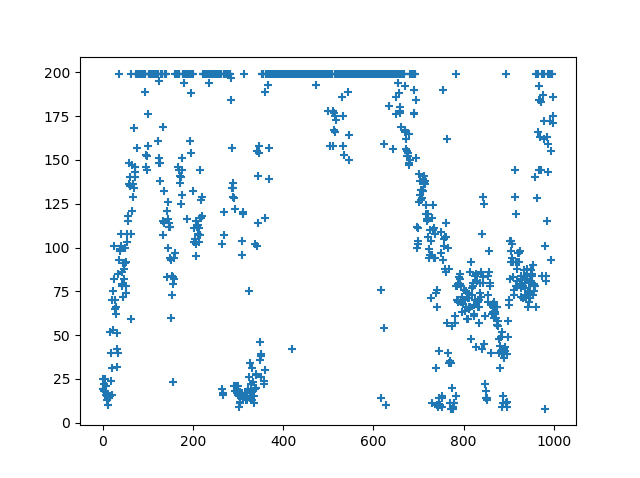
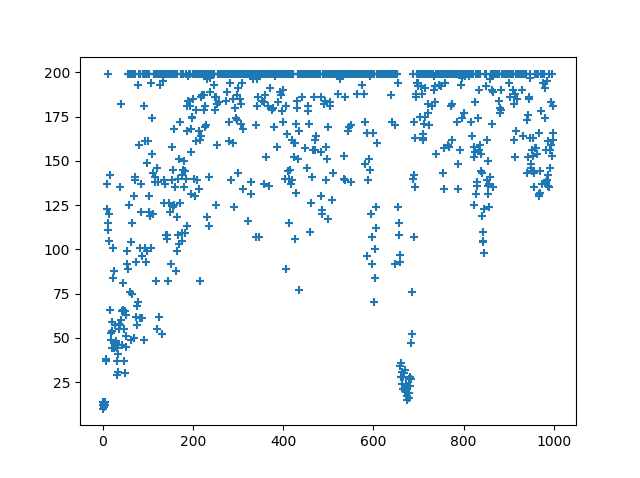

Hello , CartPole !!
Sample01(python)
Download
import copy
from collections import deque
import gym
from gym import wrappers
import keras
from keras import optimizers
from keras import losses
from keras.models import Sequential
from keras.models import model_from_config
from keras.models import model_from_json
from keras.layers import Dense
from keras.optimizers import RMSprop
from keras.utils import plot_model
from keras import backend as K
import matplotlib.pyplot as plt
import numpy as np
import random
import sys
import tensorflow as tf
import time
EPOCH = 1000
BATCH_SIZE = 32
CLEAR_TURN = 195
GAMMA = 0.99
def main(args):
env = gym.make('CartPole-v0')
env = wrappers.Monitor(env,'/video', video_callable=(lambda ep: ep % 100 == 0),force=True)
if "-r" in args:
model = model_from_json(open('model.json').read())
model.load_weights('model.h5')
else:
model = Sequential()
model.add(Dense(16,activation="relu",input_dim=4))
model.add(Dense(16,activation="relu"))
model.add(Dense(2,activation="linear"))
target = clone_model(model)
data = deque(maxlen=200)
model.compile(loss=loss_func, optimizer=RMSprop(lr=0.001, rho=0.9, epsilon=None, decay=0.0))
model.summary()
plot_x = []
plot_y = []
point = 0
for episode in range(EPOCH):
observation = env.reset()
nextObservation, reward, done, info = env.step(env.action_space.sample())
for t in range(CLEAR_TURN * 2):
if EPOCH - episode == 2:
env.render()
time.sleep(0.1)
action , y = getAction(model,observation,episode)
nextObservation, reward, done, info = env.step(action)
if done:
if t > CLEAR_TURN:
data.append((observation.reshape((1,4)),action,1,np.zeros((1,4))))
if "-w" in args:
open('model.json', 'w').write(model.to_json())
model.save_weights('model.h5')
else:
data.append((observation.reshape((1,4)),action,-1,np.zeros((1,4))))
print("{} times : finished after {} timestamps {}".format(episode,t+1,y))
plot_x.append(episode)
plot_y.append(t + 1)
break
else:
data.append((observation.reshape((1,4)),action,0,nextObservation.reshape((1,4))))
observation = nextObservation
if BATCH_SIZE < len(data):
learn(model,target,data)
if episode % 5 == 0:
target = clone_model(model)
plt.scatter(plot_x,plot_y,marker="+")
plt.show()
def huberloss(y_true, y_pred):
return K.mean(K.minimum(0.5*K.square(y_pred-y_true), K.abs(y_pred-y_true)-0.5), axis=1)
def loss_func(y_true, y_pred):
error = tf.abs(y_pred - y_true)
quadratic_part = tf.clip_by_value(error, 0.0, 1.0)
linear_part = error - quadratic_part
loss = tf.reduce_sum(0.5 * tf.square(quadratic_part) + linear_part)
return loss
def suppression(x):
return -1 if x < -1 else (1 if x > 1 else x)
def clone_model(model, custom_objects={}):
config = {
'class_name': model.__class__.__name__,
'config': model.get_config(),
}
clone = model_from_config(config, custom_objects=custom_objects)
clone.set_weights(model.get_weights())
return clone
def getAction(model,observation,episode):
y = model.predict(observation.reshape((1,4)))
if (0.01 +0.9/(1.0 + episode)) <= np.random.uniform(0,1):
return np.argmax(y) , y
else:
return np.random.choice([0, 1]) , y
def learn(model,target,data):
y_pred = []
y_true = []
for d in data:
state,action,reward,nextState = d
y = model.predict(state)
if not (nextState == np.zeros(state.shape)).all(axis=1):
y[0][action] = reward + GAMMA * np.max(target.predict(nextState)[0])
else:
y[0][action] = reward
y_pred.append(state.reshape(4))
y_true.append(y.reshape(2))
model.fit(np.array(y_pred),np.array(y_true),batch_size=BATCH_SIZE,verbose=0,epochs=1)
main(sys.argv)

Figure01

Figure02